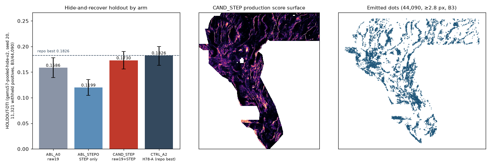

gems78-h78step-xstrike-44090dots-20261022T011826Z-e6e72188-zeros-DO-NOT-SUBMIT.tif (or the .zip with that single TIFF inside) from the banner, and verify its
SHA-256 equals f76ad302fd8889899b1d1c04c340c5beca0dcabea50c63d4100461a0609f8c07 (e.g. sha256sum gems78-h78step-xstrike-44090dots-20261022T011826Z-e6e72188-zeros-DO-NOT-SUBMIT.tif).GEMSDOE78 H78-STEP xstrike-step HGB 44090 dots B3; HOLDOUT-DTI 0.1730 s20 vs CTRL 0.1826; NEGATIVE-DUPLICATE-do-not-submit; not a projectionevidence/) before calling anything ORGANIZER-CONFIRMED. Until then every number for this file is
HOLDOUT-DTI only.Format the portal requires (and this file passes locally): single-band GeoTIFF matching the sample submission's CRS (EPSG:32611), shape (3730×3292) and geotransform, predicted values in [0, 1].
Evaluator gems57-pooled-hide-v2 (shared, unmodified), seed 20 buffered whole-component
hide-and-recover, 11,321 withheld positive pixels, pooled DTI α=0.2 / β=0.8 / 300 m
triangular kernel, visible faults masked pixel-exactly, 95% CI by paired 20-km block bootstrap. Identical folds,
training rows, learner and emitter for every arm — only feature columns differ.
| Arm (B3 / 44,090 dots) | HOLDOUT-DTI | 95% CI | Withheld positives |
|---|---|---|---|
| CAND_STEP (19 raw + 54 cross-strike step features) | 0.1730 | [0.1559, 0.1903] | 11,321 |
| CTRL_A2 (103 H78-A features; repo best model class) | 0.1826 | [0.1633, 0.2000] | 11,321 |
| ABL_A0|B3|44090 | 0.1586 | [0.1396, 0.1777] | 11,321 |
| ABL_STEPO|B3|44090 | 0.1199 | [0.1048, 0.1356] | 11,321 |
| paired Δ CAND − CTRL (primary) | -0.0096 [-0.0176, -0.0025] | ||
| Far-truth stratum (>10 px from visible faults, 5,150 positives): CAND vs CTRL | CAND 0.0696 [0.0565, 0.0831] · CTRL 0.0778 [0.0628, 0.0929] · Δ -0.0082 [-0.0152, -0.0013] | ||
Budgets/configs (pooled HOLDOUT-DTI, same instrument):
| Arm | CTRL_A2|B2|44090 | CTRL_A2|B3|37654 | CTRL_A2|B3|44090 | CTRL_A2|B3|50000 |
|---|---|---|---|---|
| CTRL_A2 | 0.1586 | 0.1778 | 0.1826 | 0.1843 |
| CAND_STEP | 0.1492 | 0.1685 | 0.1730 | 0.1751 |
| ABL_A0 | 0.1376 | 0.1529 | 0.1586 | 0.1611 |
| ABL_STEPO | 0.1139 | 0.1175 | 0.1199 | 0.1196 |
Leakage canary: max single-feature symmetric AUC 0.6150 over 157 features (threshold 0.90; clean = True). Top STEP features:
| STEP feature | symmetric AUC | ≤0.90 |
|---|---|---|
xs_det_elev_step3_absz | 0.6150 | PASS |
xs_det_elev_step6_absz | 0.6124 | PASS |
xs_det_elev_step10_absz | 0.6046 | PASS |
xs_det_elev_dev6_z | 0.5720 | PASS |
xs_conc6_prod_depth_elev | 0.5665 | PASS |
xs_conc10_prod_depth_elev | 0.5660 | PASS |
xs_conc6_throw_absz | 0.5625 | PASS |
xs_conc10_throw_absz | 0.5563 | PASS |
xs_conc6_prod_elev_grav | 0.5560 | PASS |
xs_conc10_prod_elev_grav | 0.5537 | PASS |
xs_det_elev_dev6_absz | 0.5449 | PASS |
xs_conc6_prod_depth_grav | 0.5448 | PASS |

Non-GitHub hosts are outside this sandbox's network allowlist and were not re-fetched this
session (GEMSDOE32 github.io page excepted, via the page fetcher). Links are for manual review; link presence is
not a claim of fresh verification. Inputs used here are SHA-256-pinned owner mirrors of the competition files
(registry/data_manifest.json) — hash identity, not organizer authentication.